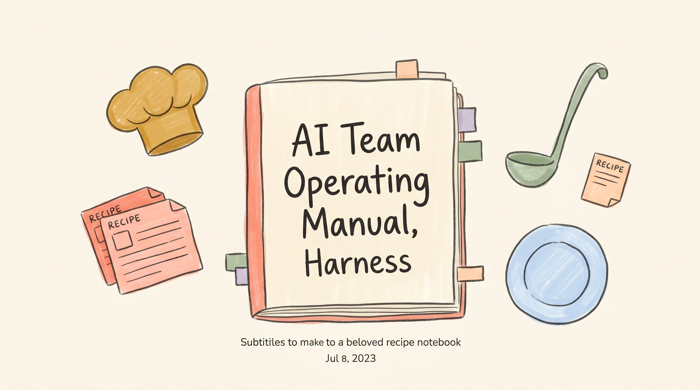
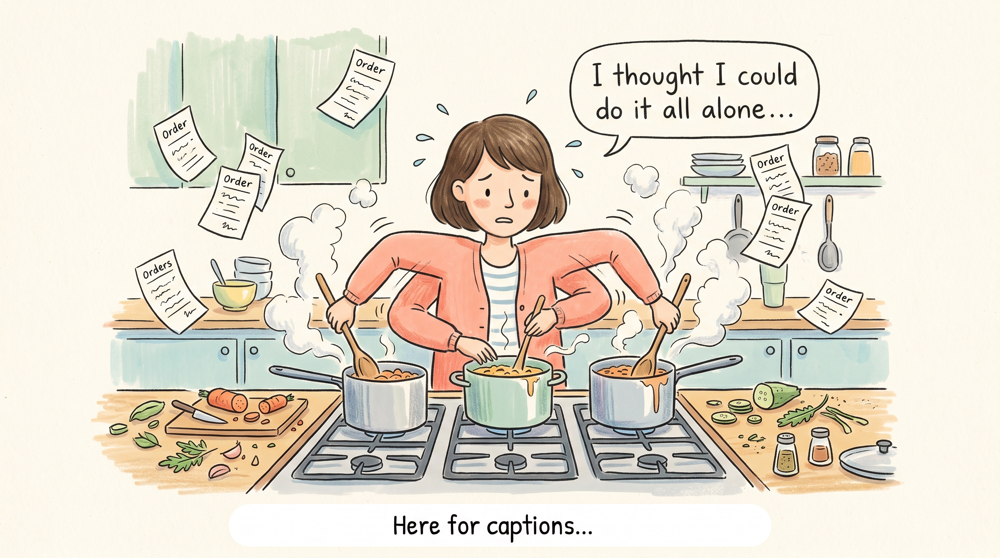
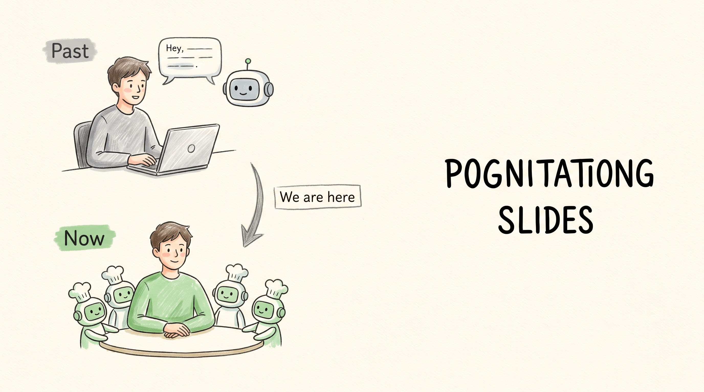
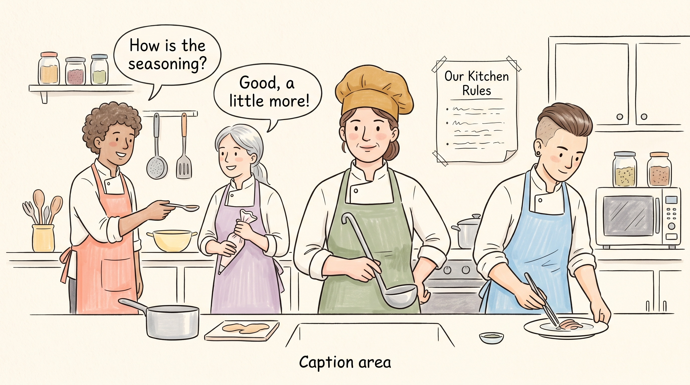
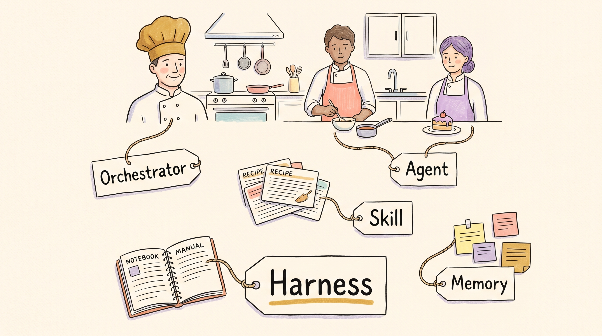
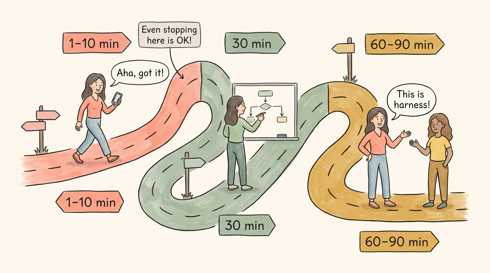
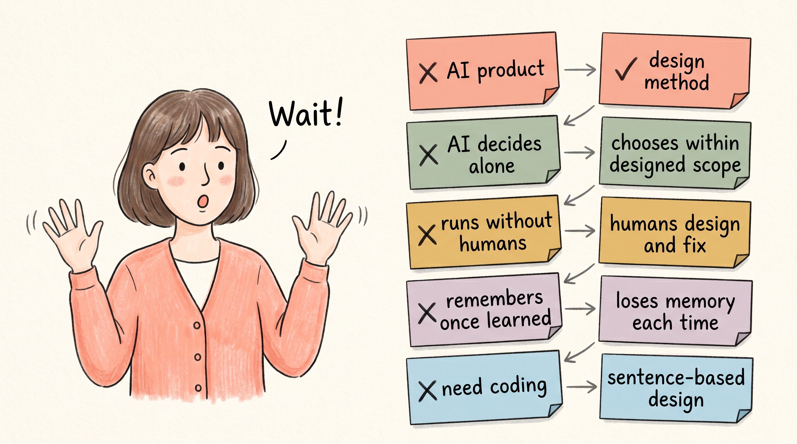
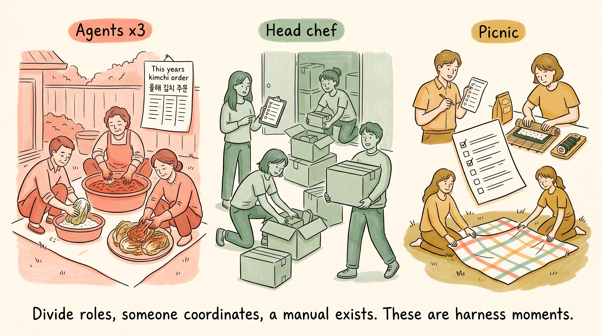
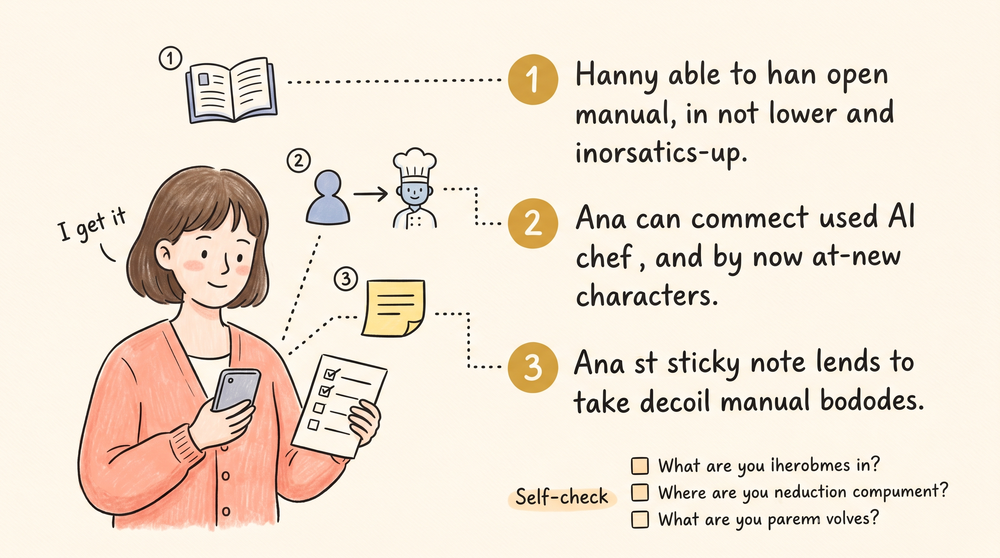
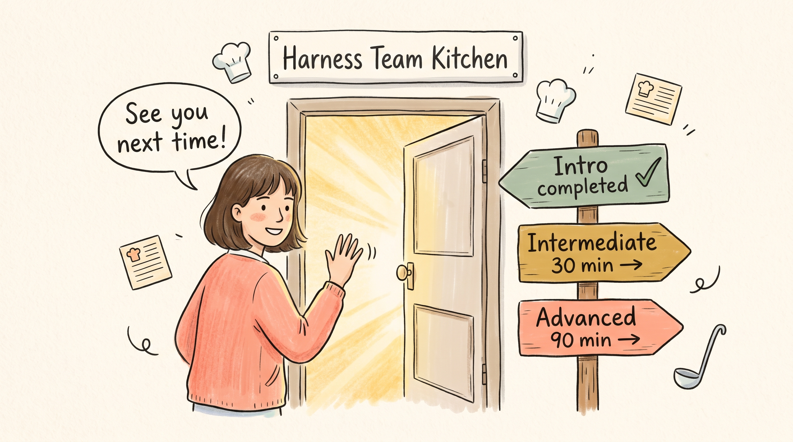

Harness Engineering for Everyone
2026-04-16 · Minho Hwang (revfactory@gmail.com)

A lone chef trying to plate a full course will flounder.

AI is becoming a team, but our vocabulary is still stuck on "just one chatbot."

Harness is the kitchen operating manual we write to divide roles among AI chefs.

Know which kitchen role each term — Agent, Orchestrator, Skill, Harness — maps to.

A three-stage path — anyone can grasp it at their own pace.

Clear up the five most common misconceptions up front.
You can spot a harness-like moment in your own everyday life.


Lock in the essence of Harness with three sentences and a self-check.

A path opens beyond understanding.